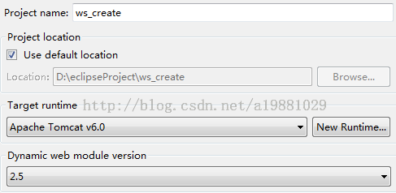
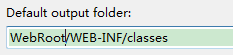
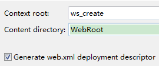
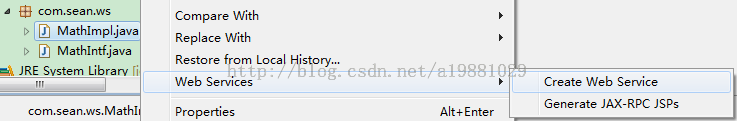
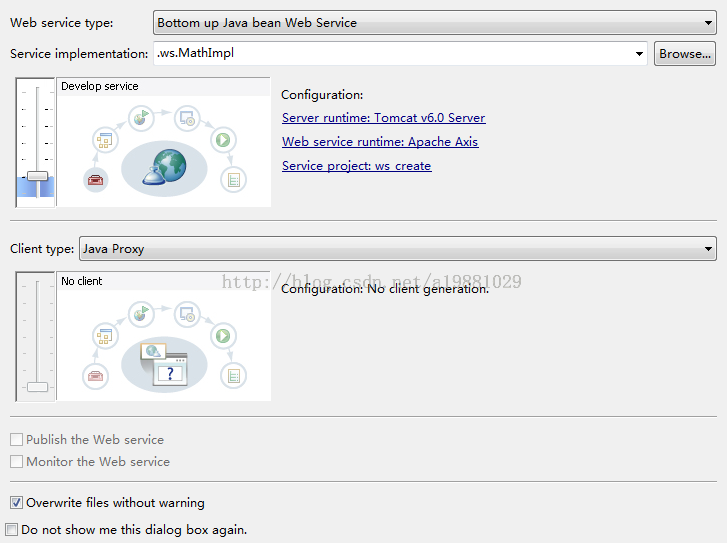
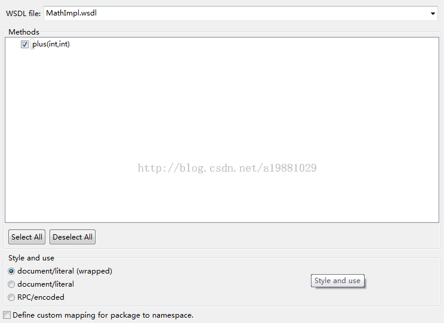
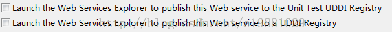
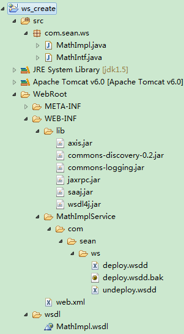

目录视图
目录视图 摘要视图
摘要视图 订阅
订阅关闭
版权声明：本文为博主原创文章，未经博主允许不得转载。
JDK版本：1.5.0_22
Eclipse版本：Helios Service Release 2（3.6.2）
首先创建一个web工程，创建过程如下：
如果选择Apache Tomcat v5.5，Dynamic web module version最高只能选择2.4，填写完成后点击“下一步”：
填写默认输出文件夹，填写完成后点击“下一步”：
填写根目录，填写完成后点击“完成”：
工程创建完成后，编写服务接口：
- package com.sean.ws;
- public interface MathIntf {
- public int plus(int a, int b);
- }
然后编写服务接口实现类：
- package com.sean.ws;
- public class MathImpl implements MathIntf {
- public int plus(int a, int b) {
- return a + b;
- }
- }
然后在服务接口实现类的基础上自动生成服务接口WSDL文件：
服务器选择Tomcat 6.0，Web Service环境选择Apache Axis(可选项还包含Axis2和CXF，不过这两项在使用前要预先设置)，服务工程选择前面创建的ws_create工程，选择完成后点击“下一步”：
这里可以修改生成的WSDL文件文件名、接口方法以及WSDL文件类型，选择完成后点击“下一步”：
只生成Web Service WSDL文件的话，不需要发布接口（此时也不能发布接口），这里直接点击“完成”即可
Web Service环境Apache Axis所需的jar包会自动放入WebRoot\WEB-INF\lib路径下
并且在WebRoot\wsdl路径下生成Web Service接口描述文件MathImpl.wsdl
接口部署文件将会生成在WebRoot\WEB-INF\MathImplService\com\sean\ws路径下
Web Service WSDL文件内容如下（MathImpl.wsdl）：
- <?xml version="1.0" encoding="UTF-8"?>
- <wsdl:definitions targetNamespace="http://ws.sean.com"
- xmlns:apachesoap="http://xml.apache.org/xml-soap"
- xmlns:impl="http://ws.sean.com" xmlns:intf="http://ws.sean.com"
- xmlns:wsdl="http://schemas.xmlsoap.org/wsdl/"
- xmlns:wsdlsoap="http://schemas.xmlsoap.org/wsdl/soap/"
- xmlns:xsd="http://www.w3.org/2001/XMLSchema">
- <!--WSDL created by Apache Axis version: 1.4
- Built on Apr 22, 2006 (06:55:48 PDT)-->
- <wsdl:types>
- <schema elementFormDefault="qualified"
- targetNamespace="http://ws.sean.com"
- xmlns="http://www.w3.org/2001/XMLSchema">
- <element name="plus">
- <complexType>
- <sequence>
- <element name="a" type="xsd:int"/>
- <element name="b" type="xsd:int"/>
- </sequence>
- </complexType>
- </element>
- <element name="plusResponse">
- <complexType>
- <sequence>
- <element name="plusReturn" type="xsd:int"/>
- </sequence>
- </complexType>
- </element>
- </schema>
- </wsdl:types>
- <wsdl:message name="plusResponse">
- <wsdl:part element="impl:plusResponse" name="parameters">
- </wsdl:part>
- </wsdl:message>
- <wsdl:message name="plusRequest">
- <wsdl:part element="impl:plus" name="parameters">
- </wsdl:part>
- </wsdl:message>
- <wsdl:portType name="MathImpl">
- <wsdl:operation name="plus">
- <wsdl:input message="impl:plusRequest" name="plusRequest">
- </wsdl:input>
- <wsdl:output message="impl:plusResponse" name="plusResponse">
- </wsdl:output>
- </wsdl:operation>
- </wsdl:portType>
- <wsdl:binding name="MathImplSoapBinding" type="impl:MathImpl">
- <wsdlsoap:binding style="document" transport="http://schemas.xmlsoap.org/soap/http"/>
- <wsdl:operation name="plus">
- <wsdlsoap:operation soapAction=""/>
- <wsdl:input name="plusRequest">
- <wsdlsoap:body use="literal"/>
- </wsdl:input>
- <wsdl:output name="plusResponse">
- <wsdlsoap:body use="literal"/>
- </wsdl:output>
- </wsdl:operation>
- </wsdl:binding>
- <wsdl:service name="MathImplService">
- <wsdl:port binding="impl:MathImplSoapBinding" name="MathImpl">
- <wsdlsoap:address location="http://localhost:8080/ws_create/services/MathImpl"/>
- </wsdl:port>
- </wsdl:service>
- </wsdl:definitions>
- 顶
- 0
- 踩
- 0
我的同类文章
- •在Axis1中使用HTTP长连接2015-06-28
- •[SoapUI]The maximum heap size (-Xmx) might be too large2015-02-25
- •Jersey框架一：Jersey RESTful WebService框架简介2015-01-26
- •如何在Axis2中添加SOAP头2014-12-01
- •Missing operation for soapAction and body element2014-11-05
- •Jersey框架三：Jersey对HTTPS的支持2015-03-03
- •Jersey框架二：Jersey对JSON的支持2015-02-26
- •[Axis2]incorrect content-type for SOAP version2015-01-06
- •[Axis2]org.apache.axiom.om.NodeUnavailableException2014-11-19
- •在Eclipse中使用Axis2插件生成Web Service服务端/客户端2014-10-18
- 猜你在找
查看评论
- 1楼 tianyu12qw 2015-01-04 00:52发表 [回复]
- 请问一下，为什么我的没有自带，我的是eclipse indigo
- Re: sean-zou 2015-01-04 09:56发表 [回复]
- 回复tianyu12qw：肯定是版本的问题，是Eclipse IDE for Java EE Developers么？
* 以上用户言论只代表其个人观点，不代表CSDN网站的观点或立场

核心技术类目
全部主题
Hadoop
AWS
移动游戏
Java
Android
iOS
Swift
智能硬件
Docker
OpenStack
VPN
Spark
ERP
IE10
Eclipse
CRM
JavaScript
数据库
Ubuntu
NFC
WAP
jQuery
BI
HTML5
Spring
Apache
.NET
API
HTML
SDK
IIS
Fedora
XML
LBS
Unity
Splashtop
UML
components
Windows Mobile
Rails
QEMU
KDE
Cassandra
CloudStack
FTC
coremail
OPhone
CouchBase
云计算
iOS6
Rackspace
Web App
SpringSide
Maemo
Compuware
大数据
aptech
Perl
Tornado
Ruby
Hibernate
ThinkPHP
HBase
Pure
Solr
Angular
Cloud Foundry
Redis
Scala
Django
Bootstrap